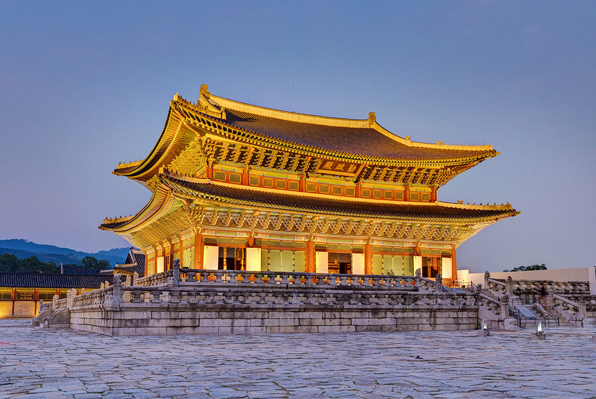

경복궁 이야기
-
광화문
광화문(光化門)은 경복궁의 정문으로 ‘광화’는 ‘군주에 의한 덕화’라는 뜻이다. 광화문은 다른 궁궐들의 정문과는 달리 돌로 높은 석축을 쌓고 그 위에 중층구조의 누각을 세워서 성곽의 성문과 같은 격식으로 장대하게 지어졌다. 광화문은 세 개의 홍예문으로 이루어져 있는데, 중앙의 홍예문은 왕이, 좌우의 홍예문은 왕세자와 신하들이 각각 출입하였다. 또한 문루(門樓)에는 종을 걸어 두어 시각을 알리는데 사용하였다. 광화문은 일제강점기에 조선총독부 청사를 지으면서 건춘문 북쪽으로 옮겼다가 한국전쟁 때 폭격을 맞아 문루가 모두 소실되었다. 이후 1968년 경복궁 정문의 위치로 다시 옮겼으나 나무를 사용하지 않고 철근콘크리트 구조로 복원하는 과정에서 위치 또한 제자리를 찾지 못하였다. 현재의 광화문은 2010년에 원래의 모습으로 제자리를 찾아서 다시 복원하였다.

흥례문
흥례문은 경복궁의 중문으로 ‘흥례’는 ‘예를 일으킨다’라는 뜻이다. 원래 홍례문의 이름은 ‘홍례문’이었으나 1867년(고종 4) 경복궁을 다시 지을 때 지금의 이름으로 바꾸었다. 흥례문은 일제강점기 때 조선총독부 청사를 지으면서 철거되었다가, 1996년 조선총독부 청사를 철거한 후 2001년에 복원하였다. 흥례문 일곽의 가운데에는 백악산으로부터 흘러 내려온 물, 즉 금천이 흐르고 있는데 그 위로 영제교라는 다리를 놓았다. 영제교는 세종 대에 붙여진 이름으로 임진왜란 때도 큰 훼손 없이 있었다가 1867년 경복궁을 다시 지을 때 보수하였다. 그러나 일제강점기 때 흥례문과 같이 철거되었다가 2001년에 복원하였다.
- 
근정전
근정전은 경복궁의 정전으로 왕의 즉위식, 신하들의 하례, 외국 사신의 접견, 궁중연회 등 중요한 국가행사를 치르던 곳이다. 근정전의 ‘근정’은 천하의 일을 부지런히 하여 잘 다스리다‘라는 뜻으로, 궁궐 내에서도 가장 규모가 크고 격식을 갖춘 건물로 면적도 가장 넓게 차지하고 있다. 근정전 앞마당, 즉 조정은 다른 궁궐의 정전과 같이 박석이 깔려있고, 중앙에는 삼도를 두어 궁궐의 격식을 갖추었으며 조정에는 정1품부터 정9품까지의 품계석을 놓았다. 월대의 귀퉁이나 계단 주위 난간 기둥에는 4신상과 12지신상을 포함하여 28수 별자리상 등을 간결하지만 재치있게 조각하였다. 내부 바닥은 전돌을 깔았고, 북쪽 가운데에 왕의 자리인 어좌를 설치하였다. 어좌 뒤에는 왕권을 상징하는 해와 달, 다섯 봉우리의 산이 그려진 ‘일월오봉도’를 놓았고 천장에는 칠조룡을 조각하여 장식하였다. 근정전에서는 정종, 세종, 세조, 중종, 선조가 왕위에 올랐으며, 1985년 국보로 지정되었다.
-
사정전
사정전의 ‘사정’은 ‘선정을 깊이 생각하다’라는 뜻으로, 왕이 신하들과 함께 일상 업무를 보던 공식 집무실인 편전이다. 이곳에서 매일 아침 업무 보고와 회의, 경연 들이 이루어졌다. 내부에는 근정전과 같이 왕의 자리인 어좌가 있고, 그 뒤로 왕권을 상징하는 해와 달, 다섯 봉우리의 산이 그려진 ‘일월오봉도’를 놓았다. 사정전 좌우에는 만춘전(만춘’ : 만년의 봄)과 천추전(‘천추’ : 천년의 가을)은 사정전의 부속건물로 사정전에 없는 온돌시설이 갖추어져 있어 사계절로 이용이 가능하였던 것으로 보인다. 경복궁 창건 당시에는 세 건물이 복도로 연결되어 있었으나 고종 대에 다시 지으면서 독립된 건물로 지어졌다.

수정전
수정전의 ‘수정’은 ‘정치를 잘 수행하다’라는 뜻으로, 고종 대 편전으로 사용했던 건물이다. 경복궁 창건 당시에는 없었으나 고종 대 경복궁을 다시 지을 때 지은 건물이다. 1894년(고종 31) 갑오개혁 때 군국기무처가 들어섰고, 이후 의정부 내각으로 바뀌면서 내각의 청사로 사용되었다. 특히 조선 초기 수정전 일대에는 세종 대에 훈민정음 창제의 산실인 집현전이 있었다. 수정전은 2012년 보물로 지정되었다.

경회루
경회루의 ‘경회’는 ‘경사스러운 연회’라는 뜻으로, 경복궁 침전영역 서쪽에 위치한 연못 안에 조성된 누각이다. 경회루는 왕이 신하들과 규모가 큰 연회를 열거나 외국 사신을 접대하던 곳이다. 연못에서 뱃놀이를 즐기고 경회루에 올라 인왕산과 궁궐의 장엄한 경관을 감상하는 왕실 정원으로 꾸몄다. 경복궁 창건 당시에는 작은 누각이었으나 1412년(태종 12)에 크게 연못을 파고 지금과 같은 규모로 다시 만들었다. 성종과 연산군 대에 수리하였다가 임진왜란 때 소실된 것을 1867년(고종 4) 경복궁을 다시 지을 때 중건하였다. 경회루의 1층은 48개(둥근 기둥과 네모난 기둥 각 24개)의 높은 돌기둥들만 세웠으며, 2층에 마루를 깔아 연회장으로 이용했다. 추녀마루에는 우리나라 건물 가운데 가장 많은 11개의 잡상(지붕 위 네 귀에 여러 가지 신상의 모습으로 만들어 얹은 장식 기와)이 있다. 경회루는 1985년 국보로 지정되었다.
-
영추문
영추문은 경복궁의 서문으로, ‘영추’는 ‘가을을 맞이한다’라는 뜻이다. 동문인 건춘문과 대비되는 개념의 이름으로 서쪽 방위의 개념에 맞게 지어졌다. 영추문은 주로 문무백관이 출입하던 곳으로 특히 서쪽 궐내각사에 근무하던 신하들이 많이 이용하였다. 현재의 문은 1975년에 철근콘크리트 구조로 복원되었다.
-
강녕전
강녕전은 교태전과 함께 왕과 왕비가 일상생활을 하던 침전이다. 강녕전은 왕의 침전으로 ‘강녕’은 ‘편안하고 건강하다’라는 뜻이다. 왕은 이곳에서 독서와 휴식 등 일상생활뿐 아니라 신하들과 은밀한 정무를 보기도 하였다. 주위의 방에서는 상궁이 숙직하였다. 건물 앞에는 넓은 월대가 있고, 지붕 위에 용마루가 없는 건물이다. 그러나 1917년 창덕궁에 대화재가 나면서 창덕궁의 침전(대조전과 희정당 등)이 소실되자 강녕전을 옮겨다가 희정당 복원에 사용되었고, 지금의 강녕전은 1995년에 복원한 것이다. 강녕전 주변으로는 경성전(‘경성’ : 완성함을 기뻐함), 연생전(‘연생’ : 생기를 맞이함), 응지당(‘응지’ : 복을 받음), 연길당(‘연길’ : 복을 맞아들임) 등 강녕전 부속건물이 있다.

교태전
교태전은 강녕전과 함께 왕과 왕비가 일상생활을 하던 침전이자, 왕비의 생활공간이다. ‘교태’는 ‘천지, 음양이 잘 어울려 태평을 이루다’라는 뜻이다. 교태전은 궁궐의 가장 가운데에 위치하고 있어, 왕비의 생활공간이기 때문에 중궁전이라고도 부른다. 교태전은 경복궁 창건 당시에는 없었으나 1440년(세종 22)에 세워진 것으로 추정된다. 강녕전과 마찬가지로 지붕 위에 용마루가 없고 내부 모습은 비슷하나, 건물 앞에 월대는 없다. 1917년 창덕궁에 대화재가 나면서 창덕궁의 침전(대조전과 희정당 등)이 소실되자 교태전을 옮겨다가 대조전 복원에 사용되었고, 지금의 교태전은 1995년에 복원하였다. 교태전 서쪽에는 천문관측 기구를 모아두고 연구하였던 흠경각(‘흠경’ : 하늘을 공경하여 공손히 사람에게 필요한 시간을 줌)과 교태전의 부속건물로 불교 행사를 행하였던 함원전( ‘함원’ : 원기를 간직함) 등이 있다.
-
자경전
자경전은 ‘어머니의 복을 누린다’라는 뜻으로, 정조가 왕위에 오른 후 어머니 혜경궁 홍씨를 위해 창경궁에 지은 ‘자경당’의 유래가 된다. 자경전은 경복궁 창건 당시에는 없었으나 1867년(고종 4) 경복궁을 다시 지을 때 신정황후 조씨(24대 헌종의 어머니이자 26대 고종의 양어머니, 대한제국 선포 후 황후로 추존됨)를 위해 지은 건물이다. 그러나 지은 지 얼마 지나지 않아 화재로 1888년(고종 25)에 다시 지어 지금까지 남아 있는 건물이다. 자경전 주변으로는 복안당(‘복안’ : 복되고 편안함)과 청연루(‘청연’ : 조촐한 연회), 협경당( ‘협경’ : 함께 경사를 누림) 등 부속건물을 따로 두었는데 모두 연결되어 있다. 자경전은 1985년 보물로 지정되었다. 굴뚝 정면 가운데는불로초의 십장생 무늬를 넣었고, 위아래로는 학, 나티, 불가사리를 배치하여 악귀를 막고 장수를 기원하는 의미를 담았다. 굴뚝으로서의 실용적인 기능에 충실하면서도 조형미가 빼어나 조선시대 궁궐 굴뚝 가운데 가장 뛰어나다는 평가를 받고 있다. 십장생굴뚝은 1985년 보물로 지정되었다.
-
동궁
동궁 영역은 왕세자와 왕세자빈의 교육공간이자 생활공간으로 궁궐의 동쪽에 있어 동궁, 또는 세자궁이라고 부른다. 현재 동궁 영역에는 왕세자와 왕세자빈의 생활공간인 자선당과 왕세자의 교육과 정무를 보던 비현각, 그리고 동궁의 정당인 계조당이 있다. 자선당의 ‘자선’은 ‘착한 성품을 기른다’, 비현각의 ‘비현’은 ‘덕을 크게 밝히다’, 계조당의 ‘계조’는 ‘계승하여 비춘다’라는 뜻으로 모두 왕세자와 관련된 뜻으로 건물 이름을 지었다. 동궁은 경복궁 창건 당시에는 없었으나 1427년(세종 9)부터 동궁을 지었고, 몇 차례의 소실과 재건을 거쳐 임진왜란 때 소실되었다가 1867년(고종 4)에 다시 지었다. 그러나 일제강점기 때 동궁 일대가 모두 철거되었으며, 자선당과 비현각은 1999년에, 계조당은 2023년에 복원하였다.

흥복전
흥복전은 고종 대 경복궁을 다시 지을 때 처음 지어졌으며, ‘흥복’의 뜻은 ‘복을 일으키다’라는 뜻이다. 이곳은 고종 연간에 독일, 일본, 이탈리아, 프랑스 등 외국 사신을 접견했다는 기록이 있다. 이후 신정황후 조씨(24대 헌종의 어머니이자 26대 고종의 양어머니, 대한제국 선포 후 황후로 추존됨)가 세상을 떠난 곳이기도 하다. 흥복전은 일제강점기 때 철거되었다가 2020년에 복원하였다.
-
함화당과 집경당
함화당과 집경당은 경복궁 창건 당시에는 없었고 1890년(고종 27)에 지은 건물이다. 함화당의 ‘함화’는 ‘모두가 화합하다’라는 뜻이고, 집경당의 ‘집경’은 ‘계속하여 공경한다’라는 뜻으로 두 건물은 별도의 건물이지만 복도로 이어져 있다. 함화당은 고종의 침전으로 사용되었고, 집경당은 고종이 신하들과 경서를 읽는 곳으로 사용하였다고 한다. 두 건물은 일제강점기 때도 철거되지 않은 건물인데 몇 차례 보수를 거쳐 현재에 이르고 있다.

향원정
향원정의 ‘향원’은 ‘향이 멀리 간다’라는 뜻으로, 원래 이곳에는 세조 대에 세운 취로정이 있었다. 그러다가 1873년(고종 10) 고종이 건청궁을 지을 때 그 앞에 연못(향원지)을 파서 연못 가운데 섬을 만들고 2층의 육모지붕의 형태로 지었다. 향원정을 가기 위해 지은 다리는 ‘향기에 취한다’라는 뜻에 취향교라고 불렀다. 원래 취향교는 무지개 모양의 흰색 다리로 조성되었으나 한국전쟁 때 파괴된 것을 1953년에 복원하였는데 향원정 남쪽으로 복원되었다. 2017년부터 2020년까지 향원정 보수공사 때 취향교는 원래의 자리로 복원하였다. 그리고 향원지 서북쪽에는 향원지의 근원이 되는 열상진원샘은 향원지를 시작으로 경회루 연못을 거쳐 경복궁 밖으로 흘러 나갔다. 향원정은 2012년 보물로 지정되었다.

집옥재
집옥재의 ‘집옥’은 ‘옥처럼 귀한 보배를 모으다’라는 뜻으로, 집옥재를 중심으로 왼쪽에 팔우정, 오른쪽에 협길당(‘협길’ : 함께 복을 누림)이 있다. 이곳은 1891년(고종 28) 창덕궁 함녕전의 별당이었던 집옥재와 협길당 등을 건청궁 서쪽으로 옮겨 지은 것으로, 고종의 서재와 외국 사신을 접견하던 장소로 사용되었다. 집옥재는 경복궁의 다른 전각과 달리 청나라 양식으로 지어진 건물로, 밖에서 보면 단층으로 보이나 내부는 2층으로 되어있다. 팔우정은 팔각 누각으로 기둥 상부에 꽃과 넝쿨무늬를 화려하게 조각하였고, 유리로 창을 만들었다. 협길당은 고유한 조선식 건물로 온돌방을 두어 휴식 장소로 사용하였다. 세 건물은 복도를 통해 연결되어 있으며, 특히 집옥재는 경복궁의 전각 중 유일하게 현판이 세로형으로 되어있다.
-
태원전
태원전의 ‘태원’은 ‘하늘’을 뜻하는데, 이곳은 1868년(고종 5)에 지어진 것으로 추정된다. 이곳에 태조의 어진을 모셨고, 이후에는 신정황후 조씨와 명성황후 민씨가 세상을 떠난 후 빈전(왕과 왕비가 세상을 떠난 후 발인하기 전까지 재궁(관)을 모셔둔 건물)으로 사용되었다. 태원전 주변에는 부속 건물인 문경전과 공묵재(‘공묵’ : 공손히 침묵함), 영사재(‘영사’ : 오래 생각하여 가슴에 새김) 등 의례용 건물이 있다. 문경전은 혼전(왕과 왕비의 신주를 종묘로 모시기 전까지 임시로 신주를 모시는 건물)으로 사용되기도 하였다. 태원전은 일제강점기 때 철거되었다가, 1960년대 청와대와 인접하여 육군 수도경비사령부와 청와대 경호부대가 있었으나, 1993년 모두 이전한 후 2006년에 현재 모습으로 복원하였다.

건청궁
건청궁은 1873년(고종 10)에 왕과 왕비의 생활공간으로 지어진 궁 안의 궁이다. ‘건청’은 ‘하늘은 맑다’라는 뜻으로, 경복궁에서 가장 북쪽에 위치하고 있다. 건물은 민간 사대부 집의 형태를 따르면서 화려하고 섬세한 치장을 가미하여 지었다. 건청궁의 왕의 생활공간인 장안당(‘장안’ : 오랫동안 평안하게 지냄)과 왕비의 생활공간인 곤녕합(‘곤녕’ : 땅이 편안함) 등으로 구성되어 있는데, 장안당과 곤녕합은 복도로 이어져 있다. 이곳에서 고종과 명성황후는 10년 정도 생활하였다. 그러나 1895년(고종 32) 곤녕합 옥호루(‘옥호’ : 옥으로 만든 호리병)에서 명성황후가 시해되는 을미사변이 일어나 고종은 이듬해 러시아공사관으로 거처를 옮기게 되었다. 이후 1909년(융희 3)에 철거되었고 일제강점기 때 미술관이 들어섰다가 철거된 후, 2007년에 지금의 모습으로 복원하였다.

신무문
신무문은 경복궁은 북문으로, ‘신무’는 ‘뛰어난 무용’ ‘신령스러운 현무‘라는 뜻이다. 신무문은 1433년(세종 15)에 지어졌다가 1475년(성종 6) 문의 이름을 신무문이라 붙였다. 신무문 쪽은 인적이 드물었으나 신하들의 공훈을 기록해 놓은 회맹단이 있어 왕이 공신들의 충성을 다짐하는 모임이 있는 회맹제에 참석할 때 이 문을 이용하였다고 한다. 또 영조 대에는 숙빈 최씨의 사당인 육상궁을 참배하기 위하여 경복궁터를 길로 삼았는데, 이때 신무문을 자주 이용하였다고 한다.
- 광화문
- 흥례문
- 근정전
- 사정전
- 수정전
- 경회루
- 영추문
- 강년전
- 교태전
- 자경전
- 동궁
- 흥복전
- 함화당
- 향원정
- 집옥재
- 태원전
- 건청궁
- 신무문